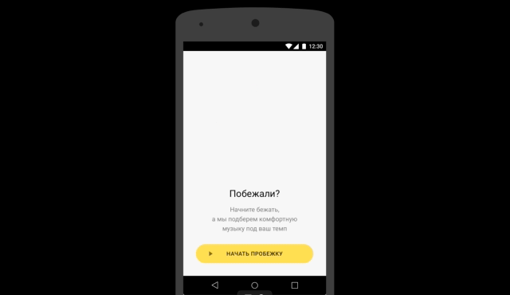

Platform
Android
Role
Product Designer
Date
2016
The School of Mobile Design was held at Yandex. Participants were expected to be immersed in the specifics of creating mobile products from an idea and its verification to the launch of a finished application. The participants who successfully completed the first stage moved on to the second, where they had to carry out a joint project with managers and developers.
The main goal was to find a product-market fit of the new cross-service based on the radio streaming technology from Yandex.Music service.
As a product team, we came with a solution to mix radio streaming technology with the user's pace at running. It helped us find a solution between the new technology of the streaming service and the potential audience life context.
